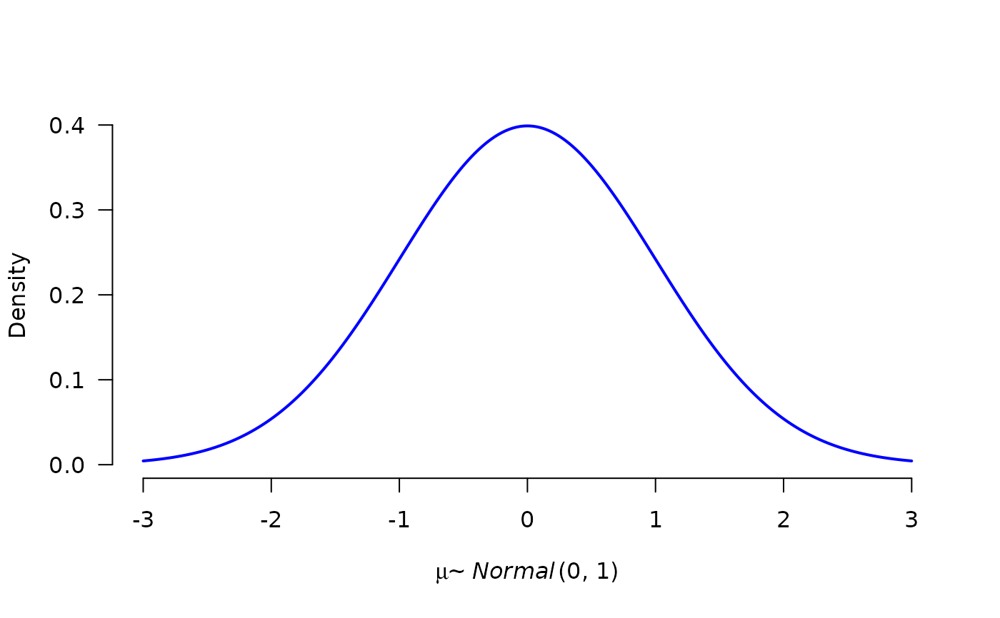
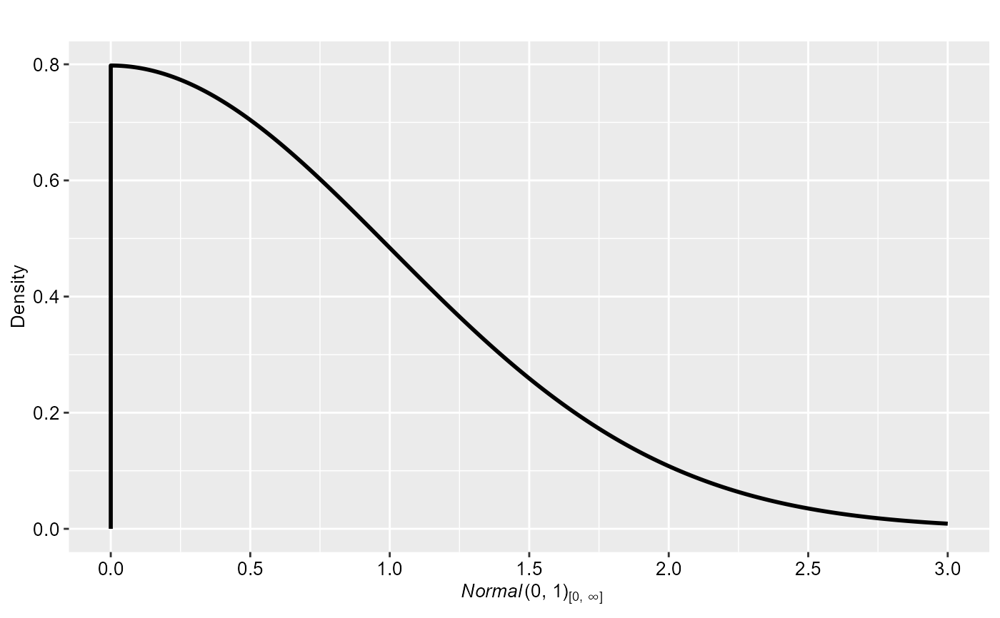
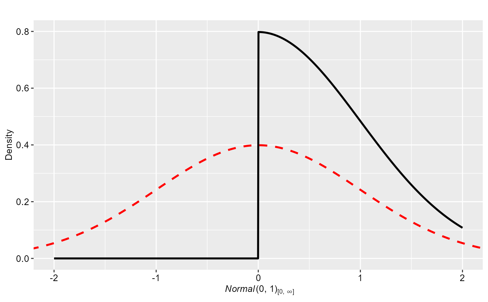
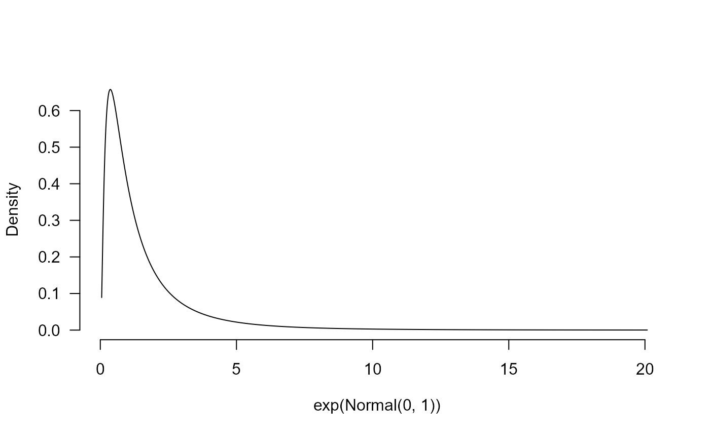

Plots a prior object
# S3 method for class 'prior'
plot(
x,
plot_type = "base",
x_seq = NULL,
xlim = NULL,
x_range_quant = NULL,
n_points = 1000,
n_samples = 10000,
force_samples = FALSE,
transformation = NULL,
transformation_arguments = NULL,
transformation_settings = FALSE,
show_figures = if (individual) -1 else NULL,
individual = FALSE,
rescale_x = FALSE,
par_name = NULL,
...
)a prior
whether to use a base plot "base"
or ggplot2 "ggplot" for plotting.
sequence of x coordinates
x plotting range
quantile used for
automatically obtaining x_range
if both x_range and x_seq
are unspecified. A number in the open interval (0, 0.5);
other values are refused. Defaults to 0.005
for all but Cauchy, Student-t, Gamma, inverse-gamma,
moment, and inverse-moment distributions that use
0.010.
number of equally spaced points
in the x_range if x_seq is unspecified
number of samples from the prior
distribution if the density cannot be obtained
analytically (or if samples are forced with
force_samples = TRUE)
should prior be sampled instead
of obtaining analytic solution whenever possible. For supported ordered
mixed measures, exact analytic curves and atoms are retained and the
requested samples are attached to each component. Supported scalar ordered
literal point totals and mixtures whose total components are all literal
points do not sample, store draws, or advance the RNG when
force_samples = FALSE. With force_samples = TRUE, their
original seeded draws are attached without replacing the analytic measure.
Other ordered families retain their existing sampling fallback.
transformation to be applied to the prior distribution. Either a character specifying one of the prepared transformations:
linear transformation in form of a + b*x
hyperbolic tangent transformation
exponential transformation
, or a list containing the transformation function fun,
inverse transformation function inv, and derivative of the
transformation jac, evaluated on the original support. A custom
transformation can also declare output_support = c(lower, upper).
Display grids on the transformed scale are evaluated only within these
bounds; a wider plotting range is retained without extending the density.
Infinite inverse values at support boundaries are omitted from continuous
density grids. Point masses retain their transformed locations.
a list with named arguments for
the transformation
boolean indicating whether the
explicitly supplied x_seq or x_range is on
the transformed scale. Automatically selected prior-coordinate ranges
are always obtained on the source scale before the density family's
existing transformation handling.
which figures should be returned in case of
multiple plots are generated. Useful when priors for the omega
parameter are plotted and individual = TRUE. For weight functions
plotted individually by plot.prior() and plot_posterior(),
figure k shows the publication weight omega of the k-th
p-value interval in ascending order, the order in which summary tables
(including RoBMA's) print the omegas; figure 1 is the reference weight of
the most significant interval. In plot.prior(), a negative k
omits figure -k (the default -1 omits the reference weight
fixed at 1). For a two-sided weight function prior, the intervals are its
two-sided p-value bins; tables on the one-sided p-value scale print these
weights first and then repeat them for the mirrored intervals.
should individual densities be returned (e.g., in case of weightfunction)
allows to rescale x-axis in case a weightfunction is plotted.
a type of parameter for which the prior is specified. Only relevant if the prior corresponds to a mu parameter that needs to be transformed.
additional graphical arguments. For mixed continuous and point
distributions, ylim controls the density axis, ylim2 controls
the probability-mass axis, and ylab2 controls its label.
plot.prior returns either NULL or
an object of class 'ggplot' if plot_type is plot_type = "ggplot".
Dirichlet simplex priors are plotted as one beta marginal per coordinate;
the ggplot method returns a list unless a single figure is selected. Ordered
ggplot results use the original figure indices: a multiple-figure selection
returns a list through the largest selected index, with NULL entries
for unselected figures, including the default reference level. A bare
ggplot is returned only when exactly one figure is selected; a selection of
several figures always returns a positional list, even if one figure is visible. For an
ordered level with mixed probability measure, the continuous density and
exact probability-mass arrows are drawn together without rescaling either
component. For ordered and Dirichlet simplex priors, show_figures
holds non-zero integers within the number of figures that are all positive
(select) or all negative (omit); other values stop with an error before any
figure is drawn. Individual weight functions take a single figure.
Declared point locations whose transformation images are not
representable stop with BayesTools_transformation_image_unavailable,
parent BayesTools_transformation. Its call is NULL and
its transformation, source_values and images fields
identify the matched failing finite entries; see posterior_transform().
Automatic prior-coordinate limits are selected on the source scale before
transformation, regardless of transformation_settings. An endpoint
with an infinite image uses the existing marginal tail convention described
in density.prior(). Explicit xlim and x_seq retain their
supplied source or transformed interpretation.
Ordered prior plots retain the continuous density of every
non-reference level, including priors with an infinite density at an exact
point. Only nonfinite plotting ordinates are omitted; finite ordinates and
declared point masses are unchanged. An infinite density point is not a
probability mass. This display rule also applies to lines.prior() and
geom_prior() and leaves density.prior() and prior_density_ordinate()
unchanged. Unknown or unsupported density routes keep their existing
limitations.
Simple priors, the marginals of simplex priors and individual omegas follow
the same rule: nonfinite ordinates (such as the infinite density of a
Gamma(0.5, 1) prior at zero) are not drawn, and the density axis ends at the
largest finite ordinate. A curve without any finite ordinate stops with class
BayesTools_prior_curve_unavailable; choose another xlim.
Direct ordered plots and layers omit persisted zero-design reference levels
from the default selection. Explicit selectors retain the original level
numbering and can select a reference level. Genuine non-reference zero and
point levels remain visible.
Finite displayed peak heights depend on the evaluation grid and do not
represent an infinite mathematical peak. A direct ordered curve with no
finite plotting ordinate stops with class BayesTools_prior_curve_unavailable
(also BayesTools_plot_condition); supply x_seq containing
finite density ordinates. Probability-axis mapping and clipping checks use
selected components only, including an explicitly selected reference.
# create some prior distributions
p0 <- prior(distribution = "point", parameters = list(location = 0))
p1 <- prior(distribution = "normal", parameters = list(mean = 0, sd = 1))
p2 <- prior(distribution = "normal", parameters = list(mean = 0, sd = 1), truncation = list(0, Inf))
# a default plot
plot(p0)
# manipulate line thickness and color, change the parameter name
plot(p1, lwd = 2, col = "blue", par_name = bquote(mu))

# use ggplot
plot(p2, plot_type = "ggplot")

# utilize the ggplot prior geom
plot(p2, plot_type = "ggplot", xlim = c(-2, 2)) + geom_prior(p1, col = "red", lty = 2)

# apply transformation
plot(p1, transformation = "exp")
